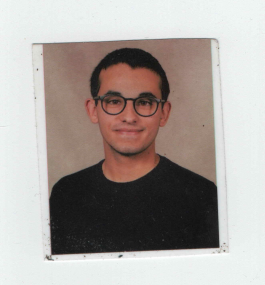
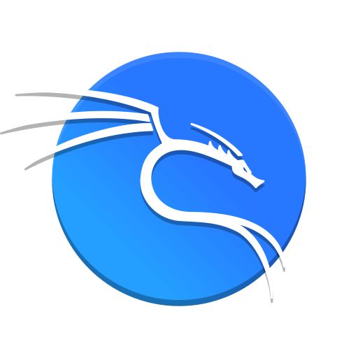

Estudante de Engenharia Informática • Cibersegurança Enthusiast
Quem sou eu?

Eu sou o Tomás Afonso Ferreira Carvalho tenho 18 anos de idade
sou de Vila Nova da Barquinha, sou estudante no IPT(Instituto Politécnico de Tomar
) estou a fazer a Licenciatura de Engenharia Informática.
Gosto de programação se não, não estaria nesta área, nunca foi a minha 1ª opção
mas pronto cá estou eu, nunca me vi a fazer algo sentado o dia todo, mas as coisas mudam.
Ao entrar neste curso apercebi-me de diversas coisas que nunca antes tinha visto ou percebido,
desenvolvi uma forte relação em querer aprender mais e mais, o que me leva a pensar no porquê de não ter
estudado mais cedo
no meu percurso escolar, no início senti-me um pouco perdido no curso mas depois de ver coisas que me
fizeram abrir
os horizontes apaixonei-me pela área!
Mas todos temos uma área preferida não é, bem a minha é tudo o que tenho a ver com Segurança Informática.
O que me motiva?
Foi ter percebido que a informática é um mundo gigante.
Não deixes para amanhã o que podes fazer hoje!
Skills
Python (intermediário)
Java (junior)
HTML
CSS
Git
GitHub
VSCode
IntelliJ
PyCharm
NetBeans
Windows
Linux (iniciante)

Kali (intermediário)
Gosto de aprender, sou muito curioso, por norma tento pesquisar o que não sei.
Tenho um grande foco em Cibersegurança, Bug Bounty, Pentesting, SOC (Security Operations Center), etc...
A DigitalWallet é uma aplicação bancária desenvolvida em Java que simula o funcionamento de uma carteira
digital real.
Permite criar contas, realizar depósitos, levantamentos e consultar o saldo de forma simples e
intuitiva.
Este projeto foi criado para consolidar conceitos de programação orientada a objetos, validação de
dados e lógica aplicada a operações financeiras, demonstrando a minha capacidade de transformar
problemas reais em soluções funcionais.
É um dos meus primeiros projetos estruturados e marcou o início da minha paixão por construir
sistemas úteis e bem organizados.
A minha Página Pessoal é um site criado em HTML e CSS para mostrar quem sou, o que faço e como estou a
evoluir na área da informática. É um projeto simples mas importante para mim, porque marca o início
da minha presença online como programador.
A Biblioteca é uma aplicação simples desenvolvida em Java que simula um sistema básico de gestão de
livros.
Permite criar utilizadores, adicionar obras, listar o catálogo, emprestar e devolver livros de forma
intuitiva.
Este projeto foi criado para praticar conceitos fundamentais de programação orientada a objetos, como
classes, métodos, encapsulamento e manipulação de coleções com [ArrayList].
Representa um dos meus primeiros sistemas estruturados em Java e reforça a minha evolução na criação de
aplicações organizadas e funcionais.
Além de estar a tirar o curso e a estudar para as cadeiras todas
também tento estudar Segurança Informática e mais tarde, certamente, quando tiver um maior leque de
conhecimentos irei publicar, como scripts, exploits, etc...
Penso que o mundo pode vir a tornar-se algo que ninguém consegue prever, especialmente porque a humanidade
não está preparada!
Portanto a cada dia que passa tento-me informar mais sobre o presente e pensar sobre o futuro. Hobbies:
ler, ver séries, correr, passear, falar com os amigos, partilhar conhecimentos, explorar a DeepWeb, etc...